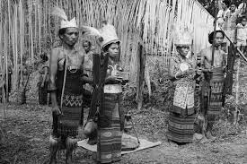
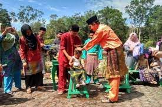
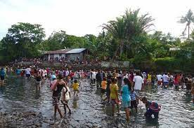

Upacara Rujena
Upacara Rujena adalah upacara adat yang dilakukan oleh masyarakat Nualu di Maluku Utara untuk merayakan kedewasaan seorang pria.

Upacara Mandi Safar
adalah upacara adat yang dilakukan oleh masyarakat Maluku Utara untuk merayakan tahun baru Hijriah. Upacara ini biasanya dilakukan di tepi pantai dan diikuti oleh masyarakat dari berbagai suku. Upacara ini bertujuan untuk membersihkan diri dari dosa dan kesalahan di tahun yang lalu.

Upacara Sasi
Upacara Sasi adalah upacara adat yang dilakukan oleh masyarakat Maluku Utara untuk menjaga kelestarian alam. Upacara ini dilakukan dengan cara menetapkan larangan untuk mengambil hasil alam di suatu wilayah tertentu. Larangan tersebut biasanya berlangsung selama beberapa bulan atau bahkan tahunan.